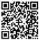
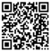

北京邮电大学2016级本科新生入学须知
新同学，欢迎你！ 祝贺你被我校录取，为方便你顺利入学，现将有关事项说明如下：
一、 报到：
1、新生请按录取通知书所填写的日期来校报到，不要提前报到。报到当日，学校在北京火车站站前广场和北京西站北二出站口设有新生接待站。学校鼓励新生独自报到。
2、请新生提前购买车（机）票，保证按学校规定时间报到。凭录取通知书，新生可购买半价火车票一张。请注意旅途安全！
3、新生因故不能按期报到者，应写信并附有关证明向学校请假（通信地址：北京市海淀区西土城路10号北京邮电大学招生办公室，邮编100876），请假期限不得超过两周。未请假或请假超过两周不报到者，视为自动放弃入学资格。
4、所有新生报到地点为西土城校区：北京市海淀区西土城路10 号。新生报到后前往北京邮电大学宏福校区参加入学教育。入学教育后，学校统一组织前往学生军训基地开展军训。军训期间学生不允许携带手机，家长有事可与辅导员取得联系。
5、教学及住宿安排：2016级英语、日语两个专业本科四年教学及住宿安排在西土城校区（军训期间住宿安排在宏福校区）；电信工程及管理、电子商务及法律、物联网工程、软件工程四个专业本科一、二年级教学及住宿安排在宏福校区，三、四年级教学及住宿安排在西土城校区；其他专业一年级教学及住宿安排在宏福校区，二年级教学及住宿安排在沙河校区，三、四年级教学及住宿安排在西土城校区。
6、请于8月15日起登录数字迎新系统，网址http://welcome.bupt.edu.cn/或扫描二维码下载学校官方APP，按系统提示登录，查询学号及辅导员信息，查看相关介绍和通知，提交相关资料；有条件的新生应在8月30日之前完成个人资料提交工作。查询到学号后，请于8月25日前登陆易班网（www.yiban.cn）注册认证，并在网页端或手机端通过“北邮易迎新”“北邮易成长”应用完成新生信息采集、学生成长手册学习及新生心理普查。使用方法详见新生手册中关于易班网内容的介绍。
-
北邮校园APP
（安卓版） -
北邮校园APP
（ios版） -
北邮微信公众账号
-
 北邮易班网APP
北邮易班网APP
请用QQ扫一扫
二、 报到时须携带的相关证件和材料：
1、高考《准考证》、我校签发的《录取通知书》、本人身份证（或军官证），其它证明不能作为入学凭证。
2、报到时须准备本人一寸半身免冠彩色同底版的照片8张，用于学生证及入学登记表等。带A4纸复印的身份证（或军官证）复印件三份（身份证须将正反两面复印在同一面纸上、军官证须复印有本人照片及有效身份信息的页面），其中两份复印件的右上角须标注学号及存折开户日期（存折开户日期见存折首页）并在报到时将此份复印件交到联合办公处，其余一份自己留存备用。
3、自带党团组织关系。北京市属单位的党员组织关系介绍信，由所在单位党委开出，抬头写“北京邮电大学党委组织部”；外省市、中央单位的党员组织关系介绍信，必须经区（县、市）委相关组织部门、中央单位组织部门等有权在全国范围转移和接收党员组织关系的党组织开出，抬头写“中共北京市委教育工委组织处”。报到时将党员组织关系介绍信交给北京邮电大学党委组织部。团员要在原中学办理团关系转出手续，纸质版团员证上应盖转出章，团员材料要随档案寄来或随身携带。
4、户口关系转至北京邮电大学（学生在大学期间只有新生入学报到时这一次迁移户口的机会；北京户口的学生不转户口）。新生按照自愿原则将户口关系迁至北京邮电大学，迁入后在校期间户口不能迁出，在校生户口均为非农业户口（如遇家庭房屋拆迁、补偿等事宜，均不能享受原家庭待遇）。户口迁移证要字迹清楚，姓名必须和录取通知书的姓名一致，户口项目要求齐全，出生地、籍贯地址要填写到市县级，并加盖公安局派出所公章，否则无法落户。报到时将户口迁移证交给学校保卫处。户口迁移地址：北京市海淀区西土城路10号北京邮电大学。外省市学生须带身份证，报到时交户口迁移证、A4纸复印的录取通知书一份和一张一寸照片（落户用，彩色黑白均可），照片背面用圆珠笔写上姓名。户口迁至学校的学生，在办理落户手续过程中不可办理身份证、护照等户籍相关业务，其户口需到次年五月左右才可正常使用，届时保卫处将在信息门户网发布细则通知。
5、学生档案。学生档案原则上应由各省、市高招办统一寄发给学校，如由学生个人携带，请报到后将档案交班级辅导员，统一移交档案馆。学生档案应包括学籍档案和党团档案两个部分。学籍档案包括记载高中学历及学习成绩的材料、普通高等学校招生考生报名登记表、普通高等学校招生考生志愿表等；党团档案包括与学生政治面貌相应的入团志愿书、入党志愿书、入党申请书和转正申请书等。若需邮寄档案，请邮寄到北京邮电大学档案馆，电话：010-62281963。
6、根据《中华人民共和国兵役法》、《征兵工作条例》和《北京市征兵工作条例》规定，18至24岁的北京男性生源，在新生报到时须持本人《北京市公民兵役证》复印件一份。凡是没有《北京市公民兵役证》的北京市适龄男性公民，必须到户籍所在地的区县人民政府征兵办公室办理后，方可办理入学手续。
三、新生托运行李时应单独开具行李票，必须妥善保管并随身携带由车站开具的行李票，凭此票到校指定地点领取所托运的行李。
请将“北邮”字样的行李标签贴在行李外包装两端（请提前一周办理托运），尽可能将行李托运到北京站和北京西站，学校只能到北京站和北京西客站统一办理提取。新生在领取行李时须依据铁路部门规定缴纳火车站到学校之间行李运输费（由物业中心代车站收取）。 （注意：1、在托运行李时，请勿将报到所需证件和材料，如录取通知书、准考证、户口迁移证、照片、存折等放在需要托运的行李中。2、新生不得仿做行李标签，对于贴仿作行李签的行李，在车站分拣行李时将不会按照新生行李进行分拣，从而影响到行李正常到达学校。）
四、费用标准及交纳方式。
请见附件一和附件二。
五、学生资助。
我校学生资助工作坚持助学、育人相结合的理念，在做好学生经济资助的同时，帮助学生提升综合能力，促进学生全面成长成才。具体资助政策体系请见附件三“2016级家庭经济困难学生资助办法”。
六、住宿。
我校学生住宿实行公寓化管理。为方便学生购买卧具，学校在北京市教委指定的厂家中统一招标确定校园卧具销售准入资格的厂家，学生报到时自愿购买。 宿舍内禁止饲养宠物，禁止使用白炽灯、饮水机、电热棒、电热毯、电饭煲、吹风机、加湿器、电热杯、酸奶机等容易引起安全隐患的电器，不得在床铺上悬挂床帏。
七、体检。
学生报到当日参加入学体检，报到当日只作体格检查，不安排化验，不需空腹。因体检项目多，用时较长，学校建议新生报到时，在验录取通知书、打印体检表后先到校医院（校中门西侧）进行体检。近视学生需戴眼镜查矫正视力。
八、音频调频接收耳机。
音频调频接收耳机是外语教学的听力设备，在新生入学分级考试、全国大学生英语四级六级考试、每学期期末考试、平时测验、收听课堂同步听力和课外听力等情况时使用。学校要求每位学生必备。在入学报到时根据宏福校区综合办公室的通知，到指定地点由人文学院实验中心教师指导，直接从厂家购买。音频调频接收耳机价格45元（耳机41元、电池4元）。
九、军训。
军训是学校总体教学计划中的必修课，学生入学报到以后，将参加为期两周的军训。因病或其它原因不能在规定日期参加军训的学生，可申请缓训。缓训者需由二级甲等以上医院出具证明或因其它原因缓训则由造成原因之单位出具证明，经本人申请并由辅导员和院领导签署意见报教务处审批，武装部备案。
十、其它注意事项。
学生入学以后，学校在三个月内按照国家教育部和学校相关规定进行身体、学习等各方面的复查。经过复查合格者予以注册，即取得学籍。不合格者由学校区别情况予以处理，直至取消入学资格。凡属徇私舞弊者，一经查实，即取消其学籍，予以退回，情节恶劣的报有关部门查究。
北京邮电大学招生办公室
2016年7月